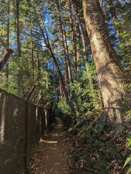
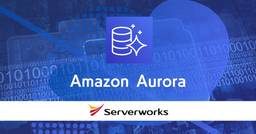
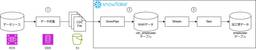
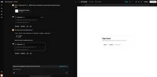

サーバーワークスエンジニアブログ
https://blog.serverworks.co.jp/
クラウド専業インテグレーター・サーバーワークスの中の人があらゆる技術についてお届けします。
フィード

Application Migration Service（MGN）の初回レプリケーション時間を記録する仕組み作ってみた
サーバーワークスエンジニアブログ
2025/2/10時点では、Application Migration Service(MGN)にて初回レプリケーション時間を確認する手段がありません。本ブログにてその課題を解決するための仕組みとCloudFormationテンプレートを紹介させていただきます。
2時間前

Amazon Cognito で構築する スケーラブルな Web アプリケーション① - セッションベース認証とトークンベース認証
サーバーワークスエンジニアブログ
こんにちは。 アプリケーションサービス部、DevOps担当の兼安です。 今回からAmazon Cognitoについての記事を書いていきます。 目標は、Amazon Cognitoを使ってスケーラブルなWebアプリケーションを構築することとし、何回かに分けて説明します。 1回目の今回は、認証方式がスケーラブルかどうかに関係があることを説明します。 本記事のターゲット Webアプリケーションの開発経験があり、今後、Webアプリケーションをスケーラブルにしたい方を対象としています。 記事中にロードバランサー（＝ALB）やAmazon EC2などが出てきますが、これらの説明は割愛していますので、AWS…
7時間前

【re:Invent 2024】はじめてのアメリカとre:Invent：(10) EXPOをめぐる
サーバーワークスエンジニアブログ
はじめに こんにちは、ドウミョウ と申します。 2024年12月、人生で初めて AWS re:Invent に参加してきました。 「はじめてのアメリカとre:Invent」として、順次、体験記をポストしています。 他の体験記については、私の記事一覧からチェックしてみてください。 re:Invent EXPO をめぐる AWSのエキスパートと会話できる AWS Village や、AWS 業界向けの各企業のパビリオンが並ぶ Expo 。 re:Invent では、規模もノリも日本と違いすぎてビックリしました。 時間帯によっては、お酒や食べ物も振る舞われています。お祭り感！ 展示いろいろ とにかく…
14時間前
GitHub Actionsで実現するコンテナイメージのビルド 1
1
サーバーワークスエンジニアブログ
コンテナデプロイの自動化を目指す開発者向けに、GitHub ActionsとAWSサービスを活用した効率的なビルド・デプロイ手法を詳解。
16時間前
【re:Invent 2024】はじめてのアメリカとre:Invent：(09) 間食・補給編
サーバーワークスエンジニアブログ
はじめに こんにちは、ドウミョウ と申します。 2024年12月、人生で初めて AWS re:Invent に参加してきました。 「はじめてのアメリカとre:Invent」として、順次、体験記をポストしています。 他の体験記については、私の記事一覧からチェックしてみてください。 おやつタイム re:Invent2024では、会場となる各ホテルにて、毎日食事が提供されていました。 その食事とは別に、各会場では軽食・間食が提供されるタイミングがあるようです。 このときは私はPCで作業をしていて、何か騒がしいなと思って後ろを振り返ったら、急に軽食が並んでおり、ビックリしました。 メニューは日によって…
2日前
オブザーバビリティ（Observability）とは
サーバーワークスエンジニアブログ
オブザーバビリティ（Observability）とは、可観測性と訳されるシステムの状況を把握するための造語です。オブザーバビリティという言葉だけで腑に落ちない方に向けて、身近な例に例えてわかりやすく解説します。
2日前
【re:Invent 2024】はじめてのアメリカとre:Invent：(08) 各会場の食事について
サーバーワークスエンジニアブログ
はじめに こんにちは、ドウミョウ と申します。 2024年12月、人生で初めて AWS re:Invent に参加してきました。 「はじめてのアメリカとre:Invent」として、順次、体験記をポストしています。 他の体験記については、私の記事一覧からチェックしてみてください。 食事について re:Invent では、会場となる各ホテルにて、食事（Meals）が提供されていました。 本ポストは、各会場ホテルを巡って食事をしてきたレポートとなります。 会場広すぎ 食事会場はとにかく広く、そのスケールの大きさに圧倒されます。 最初に食事会場を見たときの衝撃といったらもう。何故か思わず笑みがこぼれま…
3日前

（小ネタ）AWS CodeBuild で Docker コンテナをビルド可能な AWS 提供のイメージについて
サーバーワークスエンジニアブログ
AWS CodeBuild のビルドプロジェクトでは、 ビルド環境に Docker コンテナを使用します。 ビルド環境の Docker コンテナ上では、 Docker コンテナをビルド（docker build）することも可能です。 ビルド環境に使用する Docker コンテナのイメージは、AWS 提供のイメージもあります。 AWS 提供のイメージの中では、Ubuntu / Amazon Linux のスタンダードイメージを使うと、docker build を実行できるようです。 ビルドプロジェクト作成時のイメージ選択箇所 公式ドキュメントにはこの情報は載っていませんが、CodeBuildのG…
5日前
AWS Security Hub「EC2.2」対策 - 番外編：Lambdaのセキュリティグループ設定確認・変更方法
サーバーワークスエンジニアブログ
こんにちは、近藤（りょう）です！ AWS Security Hub で 「AWS 基礎セキュリティのベストプラクティス v1.0.0（AWS Foundational Security Best Practices v1.0.0、以降 FSBP」 を有効化し、運用している AWS アカウントにおいて、Security Hub の 「EC2.2」 を検知していて その是正対象となるデフォルトのセキュリティグループが Lambda 関数で利用されているケースがありました。 本記事では、Lambda のセキュリティグループを効率的に確認する方法 を紹介し、適切な設定に変更する手順 を説明します。 S…
5日前
【re:Invent 2024】はじめてのアメリカとre:Invent：(07) 現地でゲットしたもの
サーバーワークスエンジニアブログ
はじめに こんにちは、ドウミョウ と申します。 2024年12月、人生で初めて AWS re:Invent に参加してきました。 「はじめてのアメリカとre:Invent」として、順次、体験記をポストしています。 他の体験記については、私の記事一覧からチェックしてみてください。 現地でゲットしたものたち re:Inventでは、至るところで様々な SWAG（ノベルティ）をゲットすることができます。 一方で、私は荷物を増やしたくないタイプなので、必要最小限のノベルティに留めましたが、幾つかご紹介します。 re:Invent 2024 フーディ 今年はロゴカスタマイズが可能なのは、他メンバも書いて…
6日前
【re:Invent 2024】はじめてのアメリカとre:Invent：(06) 皆さんはどちらから？
サーバーワークスエンジニアブログ
はじめに こんにちは、ドウミョウ と申します。 2024年12月、人生で初めて AWS re:Invent に参加してきました。 「はじめてのアメリカとre:Invent」として、順次、体験記をポストしています。 他の体験記については、私の記事一覧からチェックしてみてください。 Tell us where you're visiting from re:Invent 2024 にて、「Tell us where you're visiting from」が展示されていたので眺めてきました。 「あなたの生まれた場所か、いま住んでいる場所に、ステッカーを貼ってね」というやつです。AWSのイベントで…
7日前

Amazon Auroraで、IAMデータベース認証とAWS Secrets Managerによるパスワードの自動ローテーションを設定してみる 1
サーバーワークスエンジニアブログ
こんにちは。 アプリケーションサービス部、DevOps担当の兼安です。 今回は、Amazon AuroraでIAMデータベース認証とAWS Secrets Managerによるパスワードの自動ローテーション、両方を設定してみました。 本記事のターゲット AWSのIAMデータベース認証とは AWSのIAMデータベース認証の注意事項 その他の補足 AWS Secrets Managerとは アプリケーションのデータベース接続は、IAMデータベース認証とAWS Secrets Managerのどちらを使うべきか IAMデータベース認証とAWS Secrets Managerによるパスワードの自動ロー…
7日前
AWS Certificate Managerで発行する証明書のキーアルゴリズムの選択肢について
サーバーワークスエンジニアブログ
カスタマーサクセス部の棚本です。 AWSサービス内(CloudFrontやElastic Load Balancer)で利用するSSL証明書を、 AWS Certificate Manager(以下、ACM)で発行することはよくある話かと思います。 この記事ではACMで発行する証明書のキーアルゴリズムの選択における諸注意についてお話しいたします。 ACMで利用できるキーアルゴリズムについて RSAとECDSAの比較 2031年以降のセキュリティ強度要件の基本設定方針 ECDSAを利用する場合の注意点 検証 パターン①：証明書がECDSAのみの場合 パターン②：証明書がECDSA(デフォルト)/…
7日前
【Amazon QuickSight】ダッシュボードのコード化とコードからのダッシュボード作成
サーバーワークスエンジニアブログ
Amazon QuickSightのダッシュボードをコード化する方法と、コードから新たにダッシュボードを作成する方法を紹介します。 GUIのみでのダッシュボード作成とは異なり、以下のような利点があります。 AWSアカウントを跨いで同じビジュアルのダッシュボードを作成できる。 改修作業の度にダッシュボードをコード化しておくことで、ビジュアルのバージョン管理ができる。 ダッシュボードのコード化 コードからダッシュボードを作成 実践 ダッシュボードのコード化 ダッシュボードの作成から表示まで その他 分析の作成 計算フィールド、フィルタの扱い 分析やダッシュボードの作成に失敗した場合 情報収集 ダッ…
7日前
【re:Invent 2024】はじめてのアメリカとre:Invent：(05) 会場での移動編
サーバーワークスエンジニアブログ
はじめに こんにちは、ドウミョウ と申します。 2024年12月、人生で初めて AWS re:Invent に参加してきました。 「はじめてのアメリカとre:Invent」として、順次、体験記をポストしています。 他の体験記については、私の記事一覧からチェックしてみてください。 会場での移動編 このポストでは、re:Invent 会場での移動について触れていきますが「会場での移動は、あまり不安にならないでも大丈夫です」というのが結論です。 現地参加前のブリーフィングで、re:Invent 経験者は皆、地図をベースに一様に仰ります。 「メインとなる会場は、ベネチアン」 「ウィンは、結構歩く」 「…
8日前
Snowflake FRESHNESSを使った定期的な鮮度テストを実装する
サーバーワークスエンジニアブログ
はじめに 概要 実装 1. FRESHNESSの定期実行を対象テーブルに定義 2. CREATE ALERT で監視設定 お片付け おわりに 参考 はじめに アプリケーションサービス部の鎌田(義)です。 今回は、SnowflakeのFRESHNESSを触ってみます。 概要 データ活用基盤では日々データソースからDWHへデータを収集、蓄積していきますが、 様々なイレギュラーが起こり得るかと思います。 最新のデータが反映されているか、というのもデータ品質を担保する上で重要な要素となります。 例えば、SnowpipeでS3などのデータソースから定期的にSnowflakeにデータを収集する運用をしてい…
8日前

SnowflakeのStreamとTaskを使用してCDCを実装してみる
サーバーワークスエンジニアブログ
はじめに 概要 実装 Snowpipe作成 StreamとTaskを使用したCDCの実装 Stream作成 Task作成 動作確認 おわりに はじめに アプリケーションサービス部の鎌田(義)です。 今回はSnowflakeでStreamとTaskを使用してCDCを実装してみました。 概要 以下のような構成を想定しています。 構成イメージ DMS(Database Migration Service)を使用してDBからCDCファイルをS3に出力 SnowpipeでCDCファイルをニアリアルタイムでrawデータとして取込 Streamに流入したデータをTaskでマージ処理 今回はSnowflake…
8日前

v0 と shadcn CLI で UI コンポーネントを楽々生成
サーバーワークスエンジニアブログ
こんにちは。アプリケーションサービス部の渡辺です。 今回は Vercel の v0 を使い自然言語で UI コンポーネントを作るお話です。 ※ 記事では React を使用しています。 v0 とは shadcn/ui とは UI コンポーネントを v0 で作って shadcn CLI で自分のプロジェクトにコピーしよう 今回作りたい UI コンポーネント v0 にお願いしてみる ここからが肝心。shadcn CLI でローカルにコピー まとめ v0 とは v0 は Vercel が提供する自然言語によるフロントエンドアプリケーション構築のためのサービスです。 GitHub Spark や Bo…
8日前
Network Firewallを経由する通信ではTransit Gatewayのセキュリティグループ参照が無効！
サーバーワークスエンジニアブログ
Transit Gatewayセキュリティグループ参照機能を有効化すると別VPCのセキュリティグループ参照が出来ますがNetwork Firewallを経由すると無効になる仕様があります。検証付きで解説します。
8日前

【Amazon Connect】データストリーミング設定と解除
サーバーワークスエンジニアブログ
Amazon Connectの設定メニュー「データストリーミング」について簡単な説明と設定・解除手順を紹介します。 設定画面 AWSコンソールより、Amazon Connectサービスページへアクセスし、対象インスタンスをクリックします。 アカウントの概要ページにて、右のメニューより「データストリーミング」をクリックします。 ※右のメニューが表示されない場合は、右上の三本横線（ハンバーガーメニューアイコン）をクリックします データストリーミングセクションの 「データストリーミングの有効化」チェックボックスを選択すると「問い合わせ追跡レコード」と「エージェントイベント」の設定項目が表示されます。…
8日前
【Cloud Automator】EFSファイルシステムをバックアップできるようになりました
サーバーワークスエンジニアブログ
Amazon Elastic File System (Amazon EFS) をバックアップするアクションが、Cloud Automatorに新しく加わりました。 概要 今回リリースされた「EFS: ファイルシステムをバックアップ」では、Cloud AutomatorからAWS Backupを使用してEFSファイルシステムをバックアップすることができます。 これまでCloud Automatorでは、Amazon EC2やAmazon S3、Amazon RDSなどの主要なAWSリソースのバックアップを取得することが可能でした。 当アクションの追加により、新しくEFSファイルシステムのバック…
9日前
【re:Invent 2024】はじめてのアメリカとre:Invent：(04) デイパック編
サーバーワークスエンジニアブログ
はじめに こんにちは、ドウミョウ と申します。 2024年12月、人生で初めて AWS re:Invent に参加してきました。 「はじめてのアメリカとre:Invent」として、順次、体験記をポストしています。 他の体験記については、私の記事一覧からチェックしてみてください。 デイパック編 本ポストは「デイパック編」として、re:Invent の期間中に、背負って歩いていたデイパックの中身などを共有させていただきます。 キャリーケースの中身については、別ポストでまとめていますので、そちらをご覧下さい。 こころがけ：可能な限り軽量化を心がける re:Invent は、1日20000歩 歩く前提…
9日前
AWS サポートに送付する HAR ファイルを取得する方法 with Google Chrome@ 2025 年 2 月時点
サーバーワークスエンジニアブログ
前提 AWS のマネジメントコンソールでの操作で問題が発生し、AWS サポートに問い合わせると、HAR ファイルの送付を依頼される場合があります。 以前に佐竹がブログを書いています。 blog.serverworks.co.jp 今月になり、久しぶりに HAR ファイルを取得することがありました。 その際に、「センシティブ データを含む HAR の生成を許可する」にチェックを入れないと、中身が空になってしまいました。 「センシティブ データを含む HAR の生成を許可する」にチェックを入れる方法 「その他のツール」→「デベロッパー ツール」を押します。 歯車を押します。 「Allow to g…
9日前
【GitHub】AWS CodeCommit無しでのTEAM for IAM Identity Centerのデプロイ方法とアップデート方法
サーバーワークスエンジニアブログ
垣見です。 CodeCommitが使えない環境でのTEAMのデプロイの方法をご紹介します。 初めに 記事の対象者 この手順のゴール 環境前提 変更が加わるAWSリソース 作成されるAWSリソース その他 手順の概要とポイント 準備 1. TEAM のAWS公式GitHubリポジトリをCloneし、自身の新しいリポジトリとして用意しておく 2. GitHubのアクセストークンを用意 3. IAM Identity Centerのグループに、監査ペルソナ・管理者ペルソナ用のグループを作っておく 解説 4. 開発環境のセットアップ 構築 1. IAM Identity Center委任アカウントをC…
9日前
【re:Invent 2024】はじめてのアメリカとre:Invent：(03) 荷物 キャリーケース編
サーバーワークスエンジニアブログ
はじめに こんにちは、ドウミョウ と申します。 2024年12月、人生で初めて AWS re:Invent に参加してきました。 「はじめてのアメリカとre:Invent」として、順次、体験記をポストしています。 他の体験記については、私の記事一覧からチェックしてみてください。 荷物（キャリーケース）編 はじめてのアメリカ、はじめてのラスベガス、はじめてのre:Inventということで、荷物をどうするかは相当悩みました。 本ポストでは、荷物のキャリーケース編として、今回準備したものと、実際行ってみて必要だったもの、不要だったものをまとめておきたいと思います。 （持ち歩き用の手荷物については別ポ…
10日前
AWS Certified Machine Learning Engineer - Associate (MLA-C01) 対策でやってよかったこと
サーバーワークスエンジニアブログ
マネージドサービス部 佐竹です。今回は 2025 Japan AWS All Certifications Engineers のため、最新試験 AWS Certified Machine Learning Engineer - Associate (MLA-C01) の情報を探していらっしゃる方向けに試験対策や感想等を記載させて頂きました。本ブログが試験の情報を探している方の参考になれば幸いです。
10日前
コードの複雑さを定量化してみよう
サーバーワークスエンジニアブログ
こんにちは。アプリケーションサービス部の渡辺です。 コードの品質担保にはいろいろな方法があると思います。テストカバレッジ上げることだったり、実際に動かしてみて不具合がないか確認してみたりなどです。 運用を見据えると コードの読みやすさ を品質として定義することもできますね。 ただ、 コードの読みやすさ っていったい何でしょう？ 実装者はおそらくそのコードをスラスラ読むことができますよね。一方で他の人はそのコードをスラスラ読むことができるケースとできないケースがありそうです。 おそらく、経験などが大きく影響してくると思います。 経験などの不確実なものでなく、何か仕組みで コードの読みやすさ を担…
10日前
【re:Invent 2024】はじめてのアメリカとre:Invent：(02) こころがまえ編
サーバーワークスエンジニアブログ
はじめに こんにちは、ドウミョウ と申します。 2024年12月、人生で初めて AWS re:Invent に参加してきました。 「はじめてのアメリカとre:Invent」として、順次、体験記をポストしています。 他の体験記については、私の記事一覧からチェックしてみてください。 本ポストでお伝えしたいこと 本ポストでは、re:Inventに参加する前の「こころがまえ」で意識しておくことをお伝えしたいと思います。 re:Invent 参加の目的、目標を決める 目的に応じて、セッションを選ぶ 準備は、半年前（6〜7月頃）から始める 英語は、割と何とかなる 体力、装備、乾燥対策、超大事 かなりの長文…
12日前
【re:Invent 2024】はじめてのアメリカとre:Invent：(01) イントロダクション
サーバーワークスエンジニアブログ
はじめに こんにちは、ドウミョウ と申します。 2024年12月、AWS re:Invent に参加してきました。 人生で「はじめてのアメリカ」「はじめての re:Invent」でした。 「何かしら、AWSと関わりがある方は、とにかく一度は参加しておくべきイベントだ！」と、強く感じました。 これからも、多くの方々に re:Invent がどんなイベントなのかを知って頂きたい、楽しんで頂きたい。 そのために、ほんの少しでも、私の体験が一助になればという想いを込めて「はじめてのアメリカとre:Invent」と題して、re:Invent 初参加の体験記を、何本かのポストに分けて公開することにしました…
12日前
AWS License ManagerでMicrosoft リモートデスクトップサービスを利用する際に必要なインスタンスプロファイルについて
サーバーワークスエンジニアブログ
今回はAWS License ManagerでMicrosoft リモートデスクトップサービスを利用する際、Systems Managerなどのインスタンスプロファイルが必要かどうかを検証しました。 はじめに 検証のきっかけ 忙しい方向けの結論 今回作成した構成 検証環境の構築 VPCなどの準備 Active Directoryの準備 AWS Secrets Manager シークレットの登録 AWS Marketplaceにてソフトウェアのサブスクライブ AWS License ManagerにてActive Directoryを登録 AWS License ManagerにてRDSライセン…
14日前